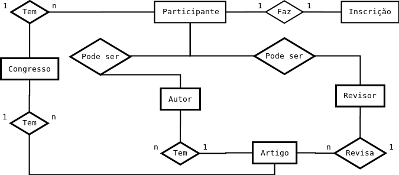
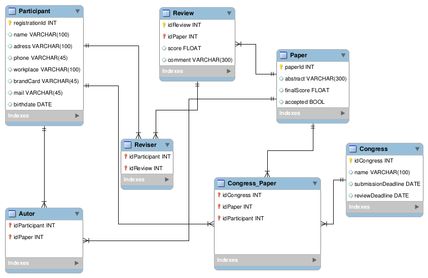

Modelo Conceitual e Lógico para um Sistema Para Controle De Submissão e Avaliação de Artigos de Congressos
A criação de modelos é uma forma de abstrair a complexidade das características de um sistema e planejá-lo antes de iniciar a implementação. Em banco de dados dois tipos de modelagem são frequentemente utilizados para representar a organização dos dados manipulados pelo sistema, são eles: o modelo conceitual e o modelo lógico ou entidade relacionamento (ER), o primeiro diz respeito a visão do usuário sobre os dados, é o modelo mais alto nível, busca representar o relacionamento entre os dados de forma simples. Já o segundo modelo, ER, detalha as características do sistema por meio de uma linguagem que representa as tabelas, atributos e relações de forma que o mesmo diagrama possa ser interpretado posteriormente por um SGBD.
A imagem abaixo ilustra o modelo conceitual do sistema de submissão:

Figura 1. Modelo conceitual do sistema de submissão.
Para o sistema em questão uma pessoa que faz inscrição se torna participante do congresso podendo ser revisor, autor ou apenas ouvinte. Um revisor pode revisar n artigos, desde que nenhum seja de sua autoria. Abaixo está ilustrado o modelo entidade-relacionamento do sistema.

Figura 2. Modelo lógico do sistema de submissão.
Como já indicado anteriormente um participante pode ser autor ou revisor. A tabela “Reviser” relaciona-se através de chave estrangeira com “Review”, que representa a revisão por cada revisor, e “Participant”, que representa um inscrito no congresso. “Autor” faz a relação entre “Participant” e “Paper” associando um autor ao seu respectivo artigo e “Congress_Paper” os artigos que foram aceitos no congresso.